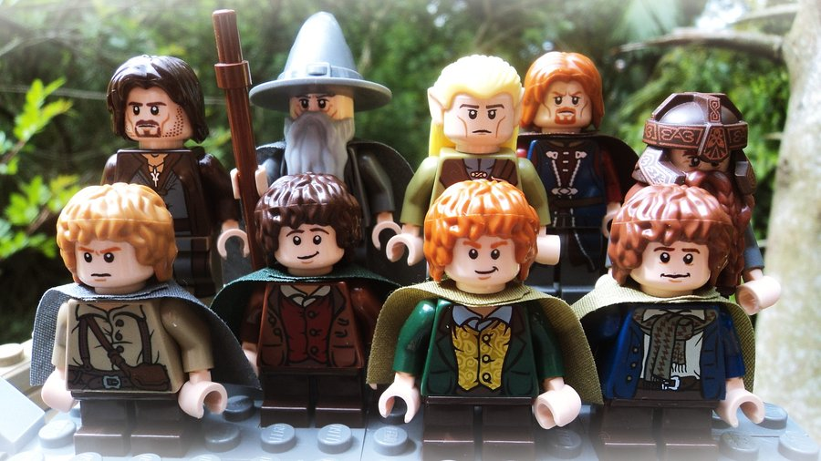

Re-building government websites
Overview
- A bit of background.... 😎
- Some activities 👍🏽🎉
Coat for Aus.. what?
Neighbourhood Jus... huh? 😵
Code for Australia Fellow
Fellowship
Government websites - the dream
Government websites - the reality
Imagine a government website designed for, and by its users
Lets sort some cards! 🙌🏾
You should have....
- Some NJC personas
- A set of cards
- Some blank cards (exciting)
- Pens
- Paper for any interesting thoughts, suggestions and ideas you might have
- Motivation 🏊🏽
Lets begin
- Look at the personas you have been given
- Look through your cards, discuss, ask questions
Grouping
Group your cards, talk through this process
- Use the blank cards to add or replace existing cards
- Which of these do you feel go togethor?
- Are any groups more important than others?
- Any cards you are unsure about - put aside
There are no right or wrong answers
Nice one, next...
- Refine your groups
- Label your groups
- If you put cards aside, is there a way you can label them?
Now....sketch your own beta site! 🎷🎺🎸
- Maybe focus on a few key services for a persona
- It doesnt need to be detailed or perfect
Stay in touch

- Code for Australia - @CodeforAus
- Neighbourhood Justice Centre - @NJC_Collingwood